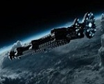

Katherine
Waterston

Redley Scott

Nostromo

Prometheus
Covenant

Covenant is an upcoming American science fiction horror film directed by Ridley Scott and written by John Logan. It is the sequel to the 2012 film Prometheus, the second installment in the Alien prequel series, the sixth installment overall in the Alien film series, and the third installment to be directed by Scott. The film stars Michael Fassbender, Katherine Waterston, Billy Crudup, Danny McBride, Demián Bichir, Carmen Ejogo, Amy Seimetz, Jussie Smollett, Callie Hernandez, Nathaniel Dean, Alexander England and Benjamin Rigby. The film is scheduled to be released on May 19, 2017.
Bound for a remote planet on the far side of the galaxy, the crew of the colony ship Covenant which includes Walter, a rebuild of the android David, a survivor of the doomed Prometheus expedition, finds what they believe to be an uncharted paradise. Instead, the crew discovers a dark, dangerous world inhabited by the original David and monstrous creatures that are hunting them.
On March 17, 2012, Ridley Scott said that Prometheus leaves many questions unanswered and that these could be answered in a sequel. He said, "If we're lucky, there'll be a second part. It does leave you with some nice open questions." Asked whether a sequel would be a direct prequel to Alien, Prometheus screenwriter Damon Lindelof said, "If we're fortunate enough to do a sequel ... it will tangentialize even further away from the original Alien." In June 2012, Lindelof said that while plot elements were deliberately left unresolved so that they could be answered in a sequel, he and Scott had thoroughly discussed what should be resolved so that Prometheus could stand alone, as a sequel was not guaranteed. Scott said that a sequel would follow Shaw to her next destination, "because if it is paradise, paradise cannot be what you think it is. Paradise has a connotation of being extremely sinister and ominous." Lindelof cast doubt on his participation, and said, "if Scott wants me to be involved in something, that would be hard to say no to. At the same time, I do feel like Prometheus might benefit from a fresh voice or a fresh take or a fresh thought." Scott said that an additional film would be required to bridge the gap between the Prometheus sequel and Alien.
As of August 1, 2012, Fox was pursuing a sequel with Scott, Noomi Rapace, and Michael Fassbender involved, and was talking to new writers in case Lindelof did not return. The film would be scheduled for a release no earlier than 2014. In December 2012, Lindelof had decided not to work on a sequel, citing other commitments. In June 2013, Jack Paglen was in negotiations to write the sequel. In October 2013, Scott confirmed that the script was complete, but in March 2014, Michael Green was rewriting Paglen's script. The sequel was scheduled to begin filming in late 2014, for release on March 4, 2016. Filming will take place in Fox Studios Australia and on locations in Australia. On September 24, it was revealed that there would be no alien xenomorphs in the sequel, Scott said, "The beast is done. Cooked." Later on that year, Scott would make a statement that was contradictory, stating what is planned and confirming the xenomorphs' presence in the film.
On August 17, 2015, Bloody Disgusting confirmed that the film would be shot before Neill Blomkamp's untitled Alien project, which Scott had requested Blomkamp put on hold for a time; Scott is attached as producer on that as-of-yet untitled film. On September 24, Scott confirmed the film's title as Alien: Paradise Lost. In November 2015, Scott revealed the new title to be Alien: Covenant, with filming set to begin in February 2016 in Australia. An official logo, synopsis and release date were released on November 16, 2015. In December 2015, Scott told TheWrap that all aliens would be back in the film including "egg, face-hugger, chest-burster, then the big boy." He also said that the film's characters would explore "the planet where the engineers came from, and come across the evolving creature that they had made." While being interviewed on BBC Radio 2, Michael Fassbender revealed that a new type of alien creature will appear in the film and that they are referred to as "neomorphs".
In late August 2015, Scott confirmed that he had started scouting the locations for the film.In October 2015, the Australian government attracted the production of the film and Thor: Ragnarok to Australia by providing $47.25 million in grants. Woz Productions Ltd., a subsidiary of 20th Century Fox, visited Te Anau, New Zealand on March 28, 2016 for a location scout, for filming in Fiordland.
On August 2, 2015, it was confirmed that the filming would begin in January 2016, which would star Rapace and Fassbender, while Rik Barnett was in talks to be cast in the film. In mid-September 2015, Scott confirmed to Deadline.com that Fassbender would star in the film and that he had already started pre-production for a February filming start in Canada or Australia, which was not yet decided. On December 17, 2015, Katherine Waterston was cast in the film for the lead role of Daniels; it will be Waterston's second film alongside Fassbender, after the pair appeared in 2015's Steve Jobs. Longtime collaborator with Scott, Dariusz Wolski was confirmed to serve as the film's cinematographer. In 2016, Ridley Scott stated that Noomi Rapace would not reprise her role of Elizabeth Shaw. However, in June it was confirmed Rapace will reprise her role as Shaw and shoot weeks worth of scenes in Scott's film. In February 2016, Danny McBride, Demián Bichir, Jussie Smollett, Amy Seimetz, Carmen Ejogo, Callie Hernandez, Billy Crudup and Alexander England were reported to have joined the cast. In March 2016, newcomer Benjamin Rigby joined the cast. In December 2016, it was announced James Franco was cast in the film, as Captain Branson, the husband to Daniels and the captain of the Covenant
Principal photography on the film began on April 4, 2016, at Milford Sound in Fiordland National Park, New Zealand. Filming wrapped on July 19, 2016. On November 18, 2016, additional photography was scheduled to take place at Leavesden Studios. Effects houses Odd Studios and CreatureNFX provided the films makeup and animatronic creature effects respectively, while Australian based effects house Animal Logic provided the films digital visual effects. Approximately 30 people from CreatureNFX worked on the project for almost six months building animatronics. Actors wearing creature suits with animatronic heads were used to portray the film's aliens and casting calls for the aliens specifically asked for people between the age of 8 and 40 who were skinny, very tall or very short, strong and physically agile, and preferably skilled in fast in movement, acrobatics, dancing, gymnastics, contortion, and "Cirque du Soleil type performers.”
Harry Gregson-Williams was initially selected as the film's composer, but confirmed in November 2016 that he was no longer involved in scoring Alien: Covenant. Gregson-Williams summarized the reasons for his departure from the project as a mixture of scheduling and creative issues, stating that "schedules and one's expectations of scoring a film don't always fit and this one wasn't going to work out." During the trailer's release in late 2016, rising Norwegian singer and songwriter AURORA was announced to have contributed to the official soundtrack. The first trailer revealed that Jed Kurzel had replaced Gregson-Williams as the composer
Alien: Covenant is scheduled to be released on May 19, 2017, by 20th Century Fox after being moved up from its previously announced released date of August 4, 2017.
Originally, Ridley Scott revealed that he was planning two sequels to Prometheus, which would lead into the first Alien film. At the same time Scott stated: "Maybe even [b a fourth film before we get back into the Alien." Scott confirmed in November 2015, that Alien: Covenant would be the first of three additional films in the Alien prequel series, before linking up with the original Alien, and stated that the Prometheus sequels will reveal who created the xenomorph aliens.
Katherine
Waterston
Michael
Fassbender
Billy
Crudup
Demián
Bichir
James
Franco
Denny
McBride
Additionally, James Franco portrays Branson, the captain of the Covenant and the husband of Daniels, while Uli Latukefu, Goran D. Kleut, Tess Haubrich and Matt Scaletti portray additional crew members aboard the Covenant.
Furthermore, Noomi Rapace reprises her role as Dr. Elizabeth Shaw, the archaeologist who was formerly a crew member of the destroyed Prometheus,and Guy Pearce reprises his role as Peter Weyland, the billionaire founder and CEO of Weyland Corporation who died before the destruction of the Prometheus.
Michael Fassbender as Walter and David: Walter is a synthetic android created by the Weyland Corporation, who assists the crew aboard Covenant. David was an earlier-made, less advanced android, formerly a crew member of the destroyed Prometheus.